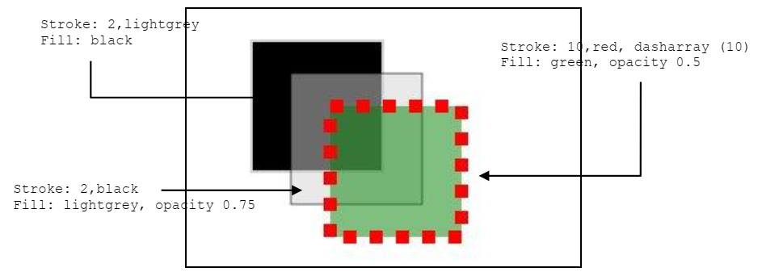
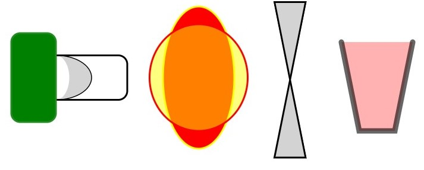
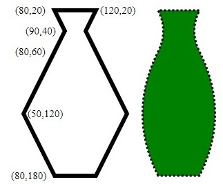
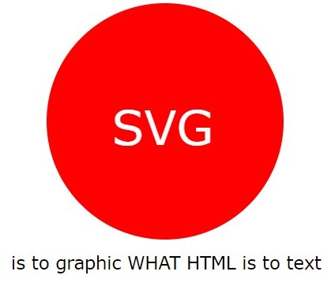
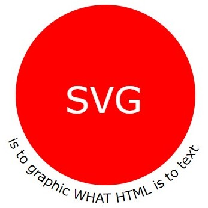

Save the code below in a html file
and load it.
<!DOCTYPE html>
<html>
<head>
</head>
<body>
<svg width="300" height="200">
<title> Exercise 1.1 </title>
<desc> SVG First Example </desc>
<rect x="80" y="50" width="100" height="150"/>
</svg>
</body>
<html>
Add the attributes stroke="black" and fill="lightgrey" and see the changes. Try to modify the example to obtain the results of the image below, manipulating fill and stroke options (fill, fill-opacity, fill-rule, stroke, stroke-width, stroke-opacity, strokedasharray). More here.

Create a new SVG file with four shapes of the following table (between them a polyline and a polygon). Experiment with zoom-in and zoom-out, observe what happens compared with raster images. More here
| Shape | Tag | Mandatory attribute | Optional attribute |
|---|---|---|---|
| Line | <line> |
(none) | x1, x2, y1, y2 |
| Rectangle | <rect> |
width, height |
x, y, rx, ry |
| Circle | <circle> |
r |
cx, cy |
| Ellipse | <ellipse> |
rx, ry |
cx, cy |
| Polyline | <polyline> |
points | - |
| Polygon | <polygon> |
points | - |
Replicate the figures of the image below using SVG.

Use the transform attribute to apply a 1/2 scale factor to one of the rects created, rotate it by 45 degrees and apply a translation of (-20,10). More here
Modify an example to load and show an image inside the SVG area. More here
Use the path element with the L option to get the jar of figure below. More here.

Modify the jar using the Q (Quadratic Bézier) to obtain the curved jar. Visualize it side by side.
Create a figure that shows simplified flags of four countries in a table two by two. Add countries images to show it side by side with its flag.
Save the excerpt below in a html file
and load it.
<title> Exercicio 1.1</title>
<desc> Exemplo de texto </desc>
<svg width="350" height="200">
<text x="30" y="50" font-size="10">
Hello World
</text>
</svg>
Try to get a red text with size 12 and a Verdana font.
Now create a red circular annoucement with a text that shows: "SVG is to graphics what HTML is to text" like the image below:

Enrich the example using some properties of the element, like tspan to increase the characters spacing difference to put the second character lower. More here.
Modify the example to change the text size in the center of the circle alternating on two sizes, simulating a pulsating heart, using the animation like this:
<animate attributeName="x" values="10;20;10" dur="3" repeatCount="indefinite"/>
Transform the circle in a heart using a cubic bézier spline. Try animating other attributes (color, character position). More here.
Use the begin element on the animation to allow the animation to start on click (onclick) in the text on in the circle. More here
Use textpath to modify the text below the circle like the following image. More here, here and here

In a textpath element, add an animation using the startOffset attribute, allowing the text animation through the path. You can use the animateMotion to move a element (text, primitive) through a defined path.
Use the <a> tag to link with pages.
Use the <g> tag to group different elements. They will share some elements and can be changed simultaneously.